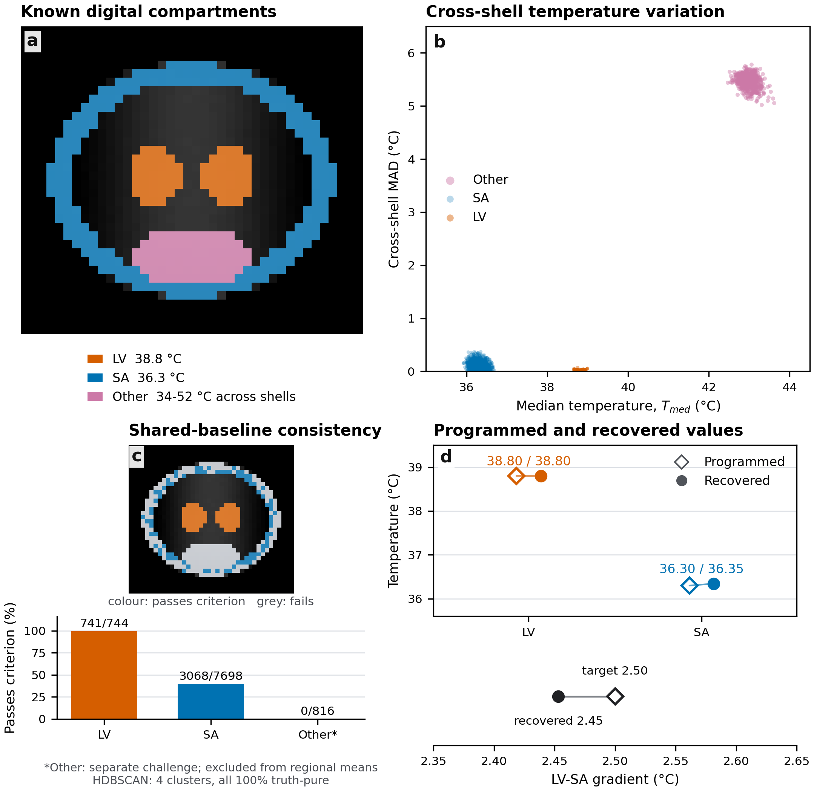

Manuscript
Public manuscript link pending.
Noise-referenced multi-shell diffusion MRI with a shared-baseline, voxel-specific consistency check.
Manuscript in preparation
The manuscript develops a method for separate ventricular and subarachnoid cerebrospinal fluid thermometry. In 12 participants, ventricular diffusion-derived estimates were consistently higher than subarachnoid estimates. Measured image noise provides an internal check of agreement across diffusion weightings.
This companion provides the code and fully synthetic reference for Supplementary Section S6 and Figure S3. It documents a known-input implementation test; it contains no participant MRI or participant-level results.
The digital reference programs lateral ventricles (LV) at 38.8 °C and subarachnoid space (SA) at 36.3 °C. The mean-inversion analysis recovers:

Public manuscript link pending.
Public supplement link pending.
Repository link pending publication.
Open Research Newcastle / Figshare DOI pending deposit.
Available here: full reproduction instructions · Python environment · reference analysis settings · publication metadata.
Download and extract the code repository or the versioned synthetic archive when its link becomes available. Run the commands below from the extracted package directory. Code, automated tests, numerical provenance and environment configuration are included.
MRtrix3 3.0.8 is a separate prerequisite for raw-data processing. The Python environment below does not install it. Follow the official MRtrix installation instructions, use version 3.0.8 for the reference run, and put dwidenoise on your PATH or set MRTRIX_BIN. The archive also supplies hash-verified preprocessing for numerical replay without rerunning denoising.
conda env create -f environment.yml
conda activate csf-thermometry
# Install MRtrix3 3.0.8 separately before make analysis.
make synthetic
make analysis
make control
make figure
make testThe archived acquisition, preprocessing, primary/control outputs and Figure S3 have file checksums. See the full instructions for replaying the supplied preprocessing and interpreting the consistency decisions.
Cite the associated paper and the specific code/data release as separate resources. Use the public article or preprint citation when available; otherwise identify the manuscript status explicitly.
Behler et al. (2026). Noise-referenced multi-shell diffusion-weighted imaging for regional cerebrospinal fluid thermometry. Manuscript in preparation.
Behler et al. (2026). Noise-referenced multi-shell diffusion-weighted imaging for regional cerebrospinal fluid thermometry. Software and fully synthetic reference dataset, version 1.1.1. Archive DOI pending deposit.
Download the software citation (CITATION.cff). The final archival citation will include its own DOI.
Corresponding author: Christian Behler · christian.behler@uon.edu.au. After repository publication, its issue tracker will also accept code questions and reproducibility reports.